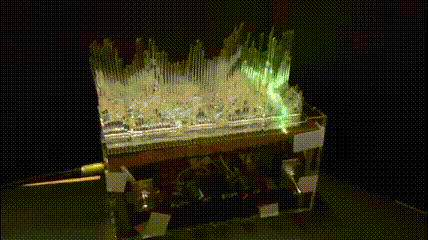
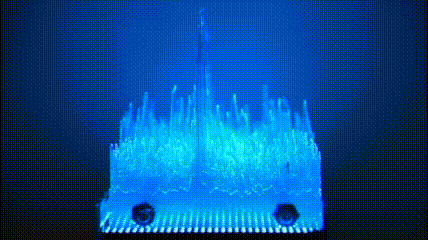
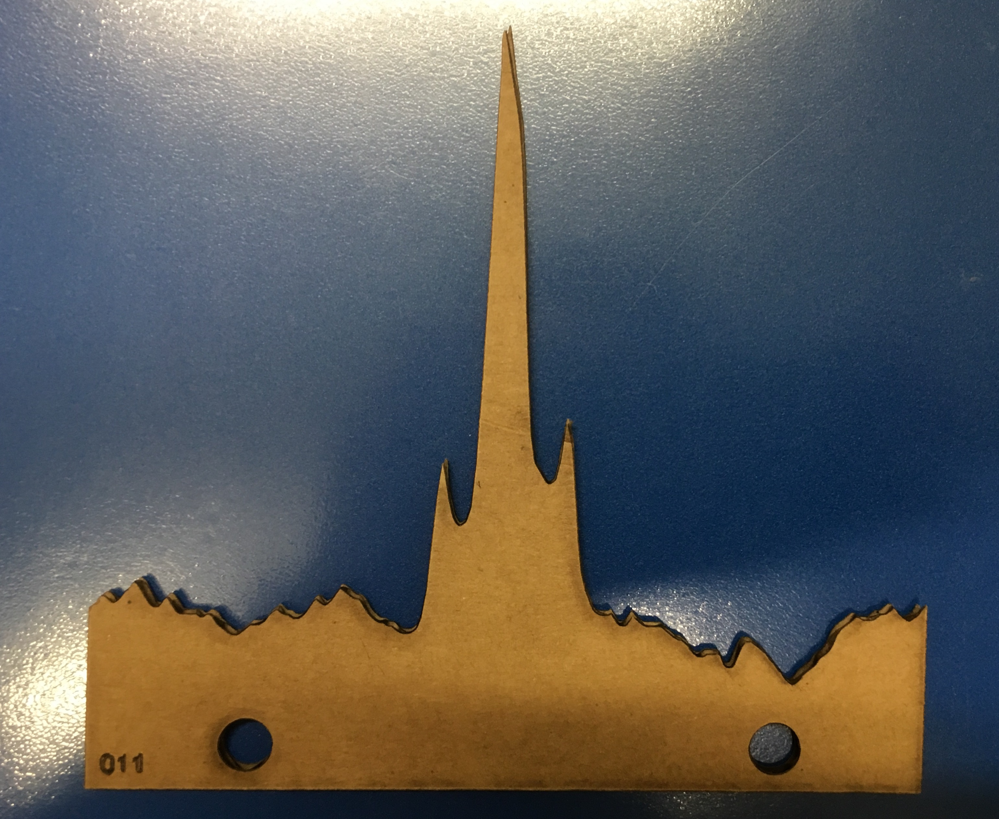
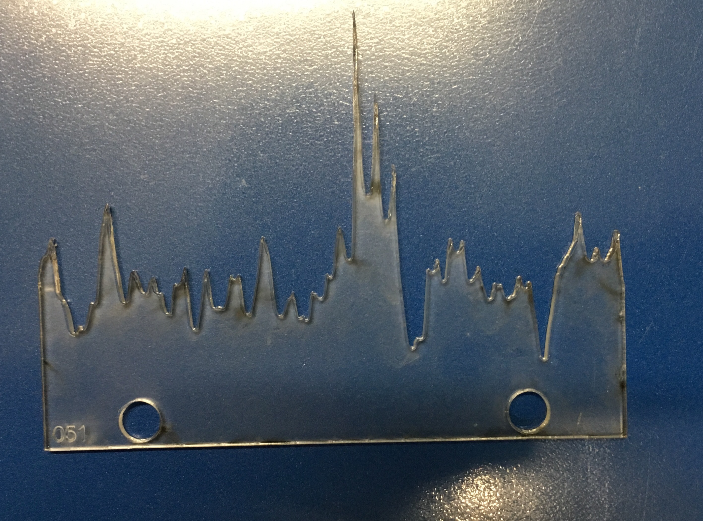
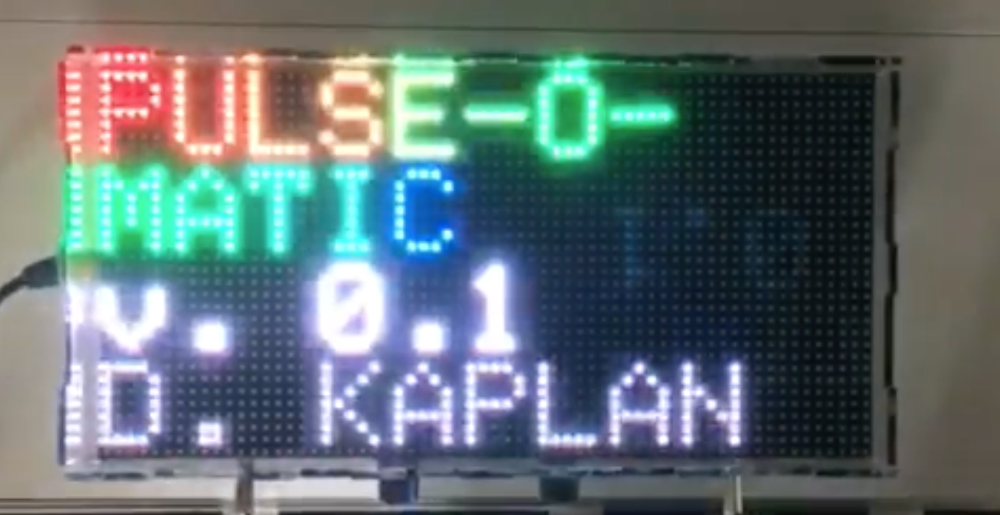
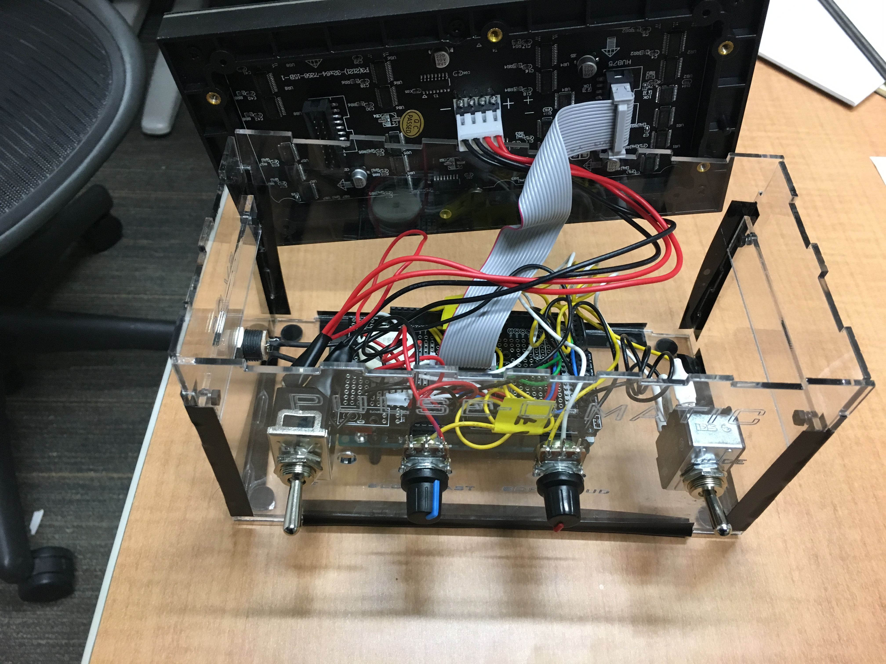
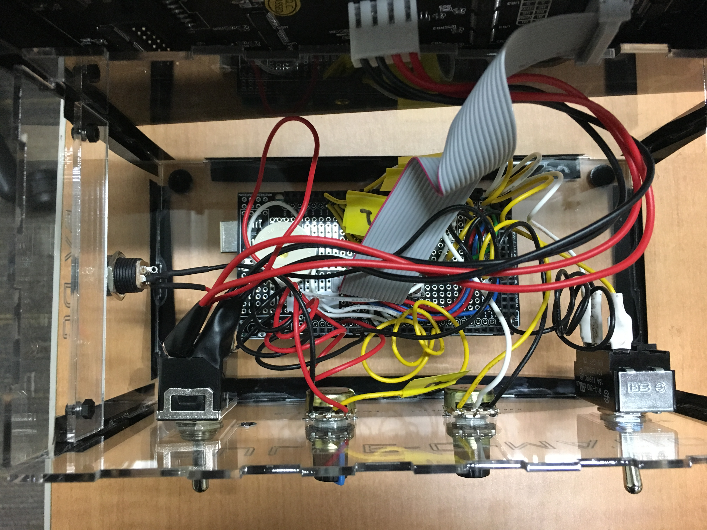
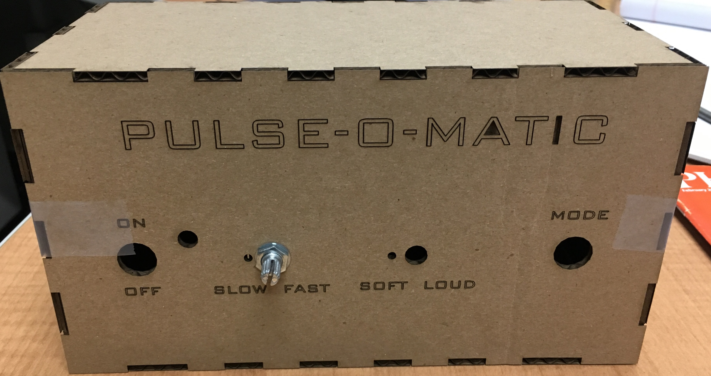
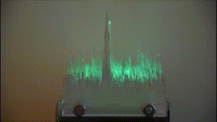
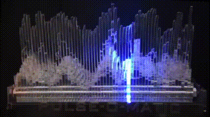

I have been experimenting with 3D printing pulsar data from the NRAO
20m telescope (see Thingiverse page).
I wanted to make another view of the data. I tried
laser-cutting
individual
pulses
out
of
first
cardboard
and then
acrylic:


This looked good, and I could stack many pulses together to make a
coherent
data-set.
But
then
I
got
the
question
Which way does time go?
So I built pulse-o-matic to show that.

Details:
- Controlled by an Arduino Mega (with protoshield) and using a 32x64 3mm RGB LED Matrix (luckily, the 3mm LED pitch was just about the same as the thicknes of the acrylic sheets I was using), I could illuminate under the stacked pulses to show how time runs across each pulse and then on to the next pulse. The pulses just sit on top of the LED matrix, held together by 1/4-20 threaded rod.
- Because I was experimenting with Arduino programming, I put in a 3-position switch so that two other modes would be possible, changing colors as the lights swept through the matrix.
- I also put in adjustable speed via a potentiometer (so the speed can match the actual pulsar whose data are used), and sound effects via a piezo buzzer and another potentiometer. Parts were a combination of Adafruit and American Science and Surplus.
- All together it came out quite well. I designed an acrylic case to hold everything together (based on MakerCase).
- My Arduino code and case design are on my Github page. I am happy to share additional construction info and wiring if you ask.
- Currently the case is held together with electrical tape, but I'm working on 3D printed connectors to make it look nicer. I don't want to glue it together because I might still want to reprogram the Arduino.
- All power is supplied by the 5V supply needed for the LED. I feed this through the switch to the Arduino as well
Other images:
- Splash screen (visible at startup, slightly over-exposed here)
 - Side view

- Underside showing connections. The LED matrix just sits on top of the acrylic
supports for easy maintenance.
 - Proto-shield showing connections to switches and
potentiometers.
 - Cardboard mockup of case (making sure hole size and placement was correct)
 - End-on view of mode 2
 - Side-on view of mode 2

{kind=link}
{kind=link}
{kind=link}